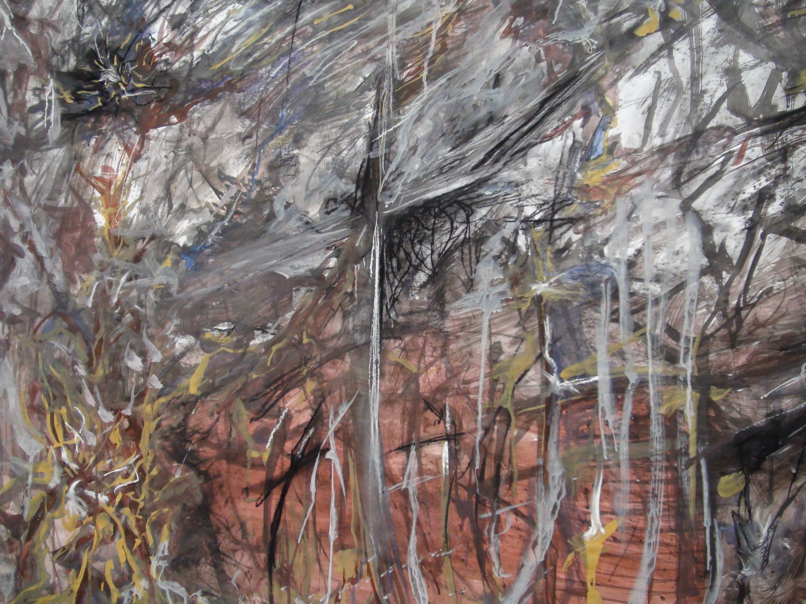

Como es que el espacio en donde nos atrincheramos, revela la condición no solo individual pero humana? ¿Qué yace más allá del cuerpo? a exploración del espacio y como este busca la potencialidad de poder revelar la presencia de un cuerpo; este último sea organico y humano ó adaptado y hecho a base de los atributos del espacio en sí. Esta misma exploracion puede ser representada en las obras dos dimensionales.

Para el espectador de la galería digítal, le recomiendo a usted que visite las diferentes categorías ya que su clasificación podría llegar a ser confisa y 'misleading'. Como artista, suelo trabajar en serie y no por sección de material; cada serie está compuesto por obras que han sido creadas por diferentes medios: dibujos, pinturas, esculturas, y etcetera. Así que le pido, señor o señora visiatnte, que si usted está buscando algo en especifico (una pintura, por ejemplo) fijesé atentamente en todas las categorías de: 'Trabajos dos dimensionales'. De no encontar lo que usted busca, por favor dirijase a mi correo electronico y le asistiré con cualquier consulta que pueda llegar a tener.